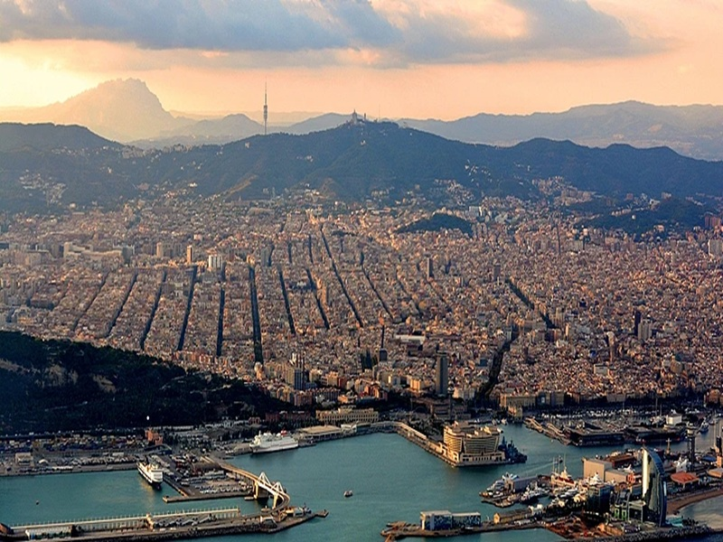
Barcelona
Barcelona zachwyca architekturą Antoniego Gaudíego, słynną bazyliką Sagrada Família i plażami nad Morzem Śródziemnym.
Kultura, zabytki i niezwykłe miejsca słonecznej Hiszpanii
Hiszpania – Państwo w zachodniej części Europy Południowej, położone głównie na Półwyspie Iberyjskim, obejmujące także Baleary na Morzu Śródziemnym, Wyspy Kanaryjskie na Oceanie Atlantyckim oraz mniejsze wysepki i tereny w północnej Afryce.
Stolicą kraju jest Madryt, a językiem urzędowym na poziomie państwowym jest hiszpański. Hiszpania słynie również z flamenco, tradycyjnej kuchni, takich potraw jak paella, oraz wyjątkowej architektury.
To idealny kierunek zarówno dla miłośników historii i sztuki, jak i osób szukających odpoczynku nad Morzem Śródziemnym lub Atlantykiem.
Hiszpania oferuje wiele wyjątkowych miast, z których każde wyróżnia się historią, architekturą i niepowtarzalną atmosferą.

Barcelona zachwyca architekturą Antoniego Gaudíego, słynną bazyliką Sagrada Família i plażami nad Morzem Śródziemnym.
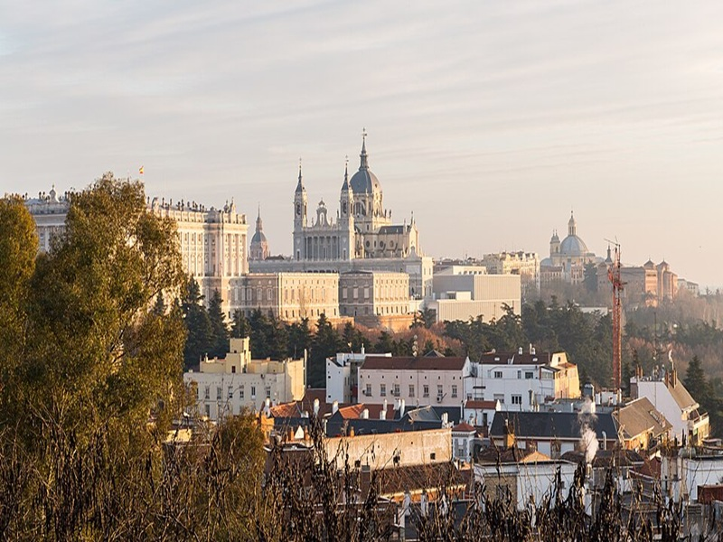
Stolica Hiszpanii słynie z Muzeum Prado, Pałacu Królewskiego, zielonego parku Retiro i bogatego życia kulturalnego.
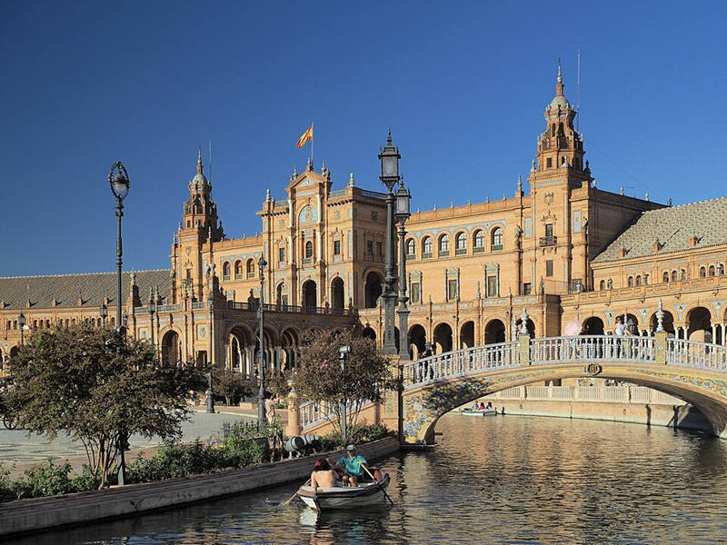
Sewilla to miasto Andaluzji znane z flamenco, imponującej katedry, wieży Giralda i pięknego pałacu Alkazar.
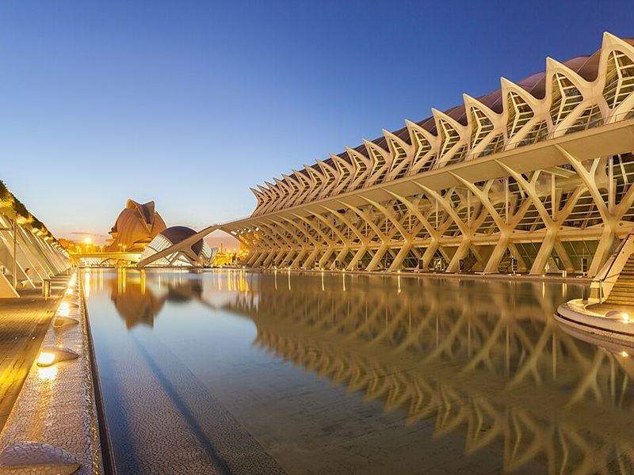
Walencja łączy historyczną zabudowę z nowoczesną architekturą Miasta Sztuki i Nauki. Jest także kojarzona z tradycyjną paellą.
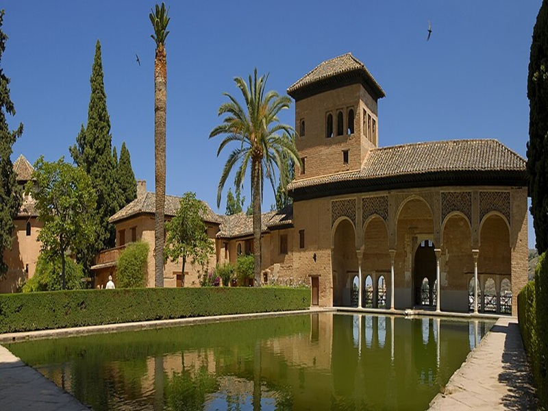
Grenada zachwyca kompleksem pałacowym Alhambra, zabytkową dzielnicą Albaicín i widokami na góry Sierra Nevada.
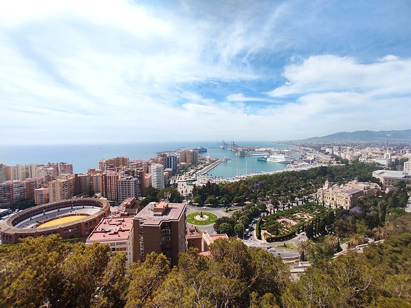
Malaga łączy starożytne rzymskie i mauretańskie zabytki z rozwijającą się sceną sztuki współczesnej oraz odnowionym portem. Jest także kojarzona z tradycyjnymi szaszłykami z sardynek (espetos) grillowanymi na plaży oraz jako miejsce narodzin Pabla Picassa
Hiszpania zachwyca zabytkami, niezwykłą architekturą i miejscami, które warto zobaczyć podczas podróży.
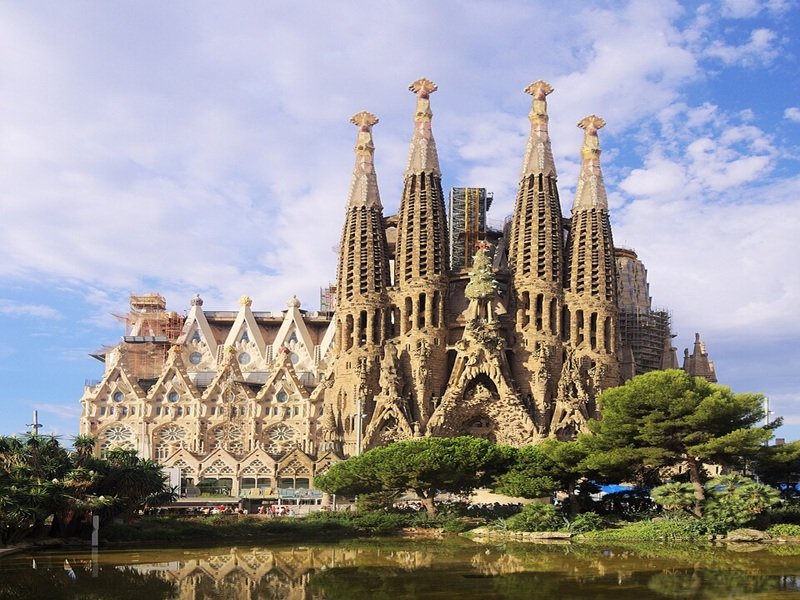
Niezwykła bazylika zaprojektowana przez Antoniego Gaudíego, będąca jednym z najbardziej rozpoznawalnych symboli Barcelony.
Lokalizacja: Barcelona
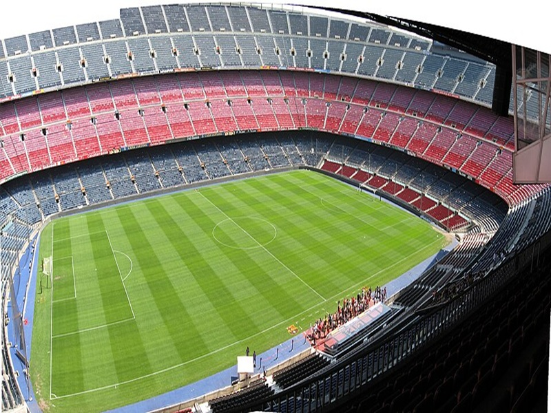
Słynny stadion piłkarski związany z FC Barceloną, będący ważnym miejscem dla miłośników futbolu.
Lokalizacja: Barcelona
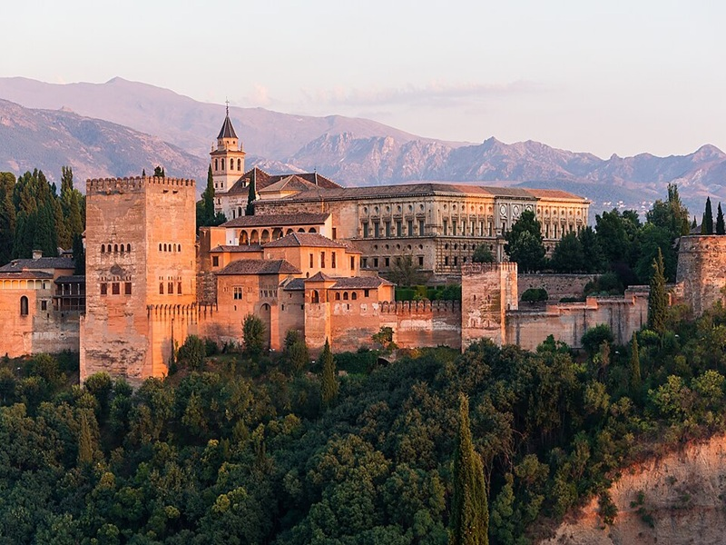
Zabytkowy kompleks pałacowy słynący z ozdobnych dziedzińców, ogrodów i architektury mauretańskiej.
Lokalizacja: Grenada
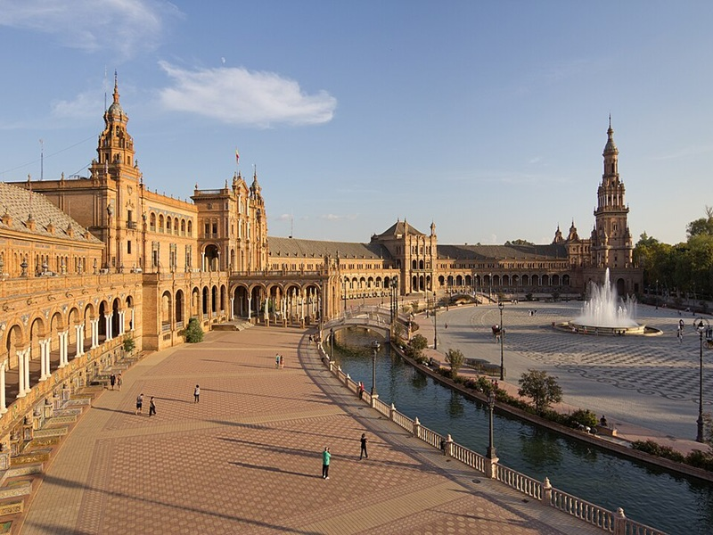
Monumentalny plac z półkolistą zabudową, ozdobnymi mostami i kolorowymi ceramicznymi dekoracjami.
Lokalizacja: Sewilla
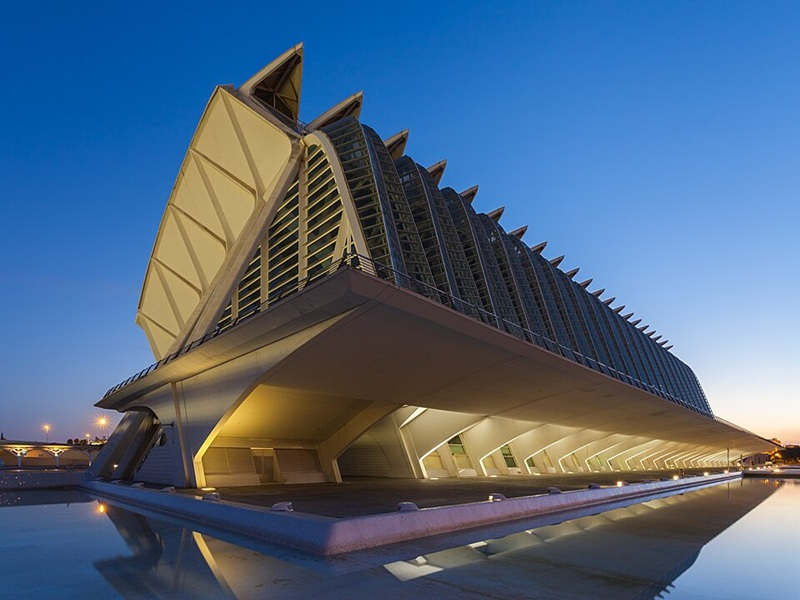
Futurystyczny kompleks, w którym znajdują się między innymi muzeum nauki i oceanarium.
Lokalizacja: Walencja
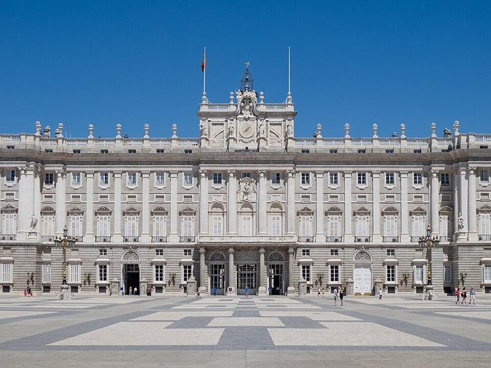
Reprezentacyjny pałac w stolicy Hiszpanii, wyróżniający się monumentalną architekturą i bogatymi wnętrzami.
Lokalizacja: Madryt
Hiszpańska kuchnia słynie z aromatycznych przypraw, świeżych składników i potraw, które warto poznać. Kliknij wybraną potrawę, aby poznać przepis.
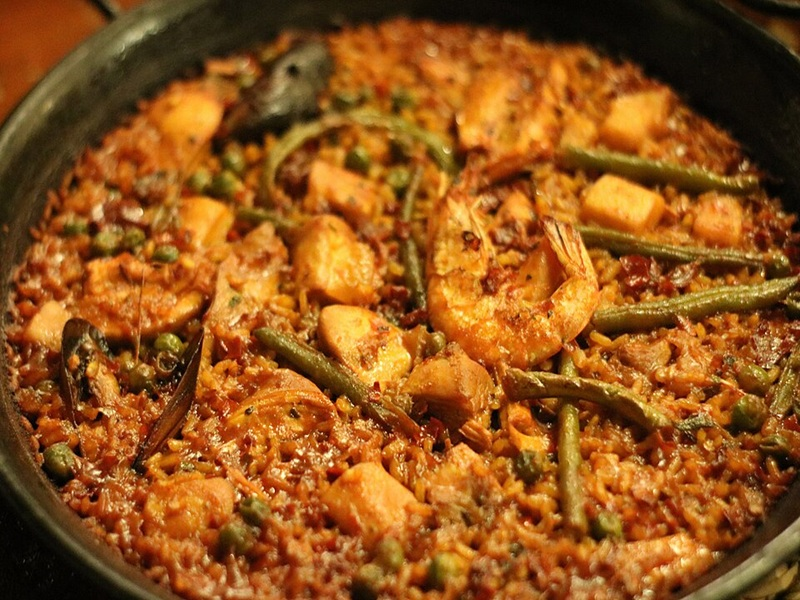
Popularne danie z ryżu, szafranu i warzyw, często przygotowywane również z owocami morza lub mięsem.
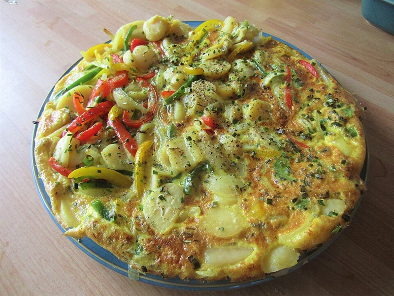
Tradycyjny hiszpański omlet z ziemniakami i jajkami, podawany na ciepło lub na zimno.
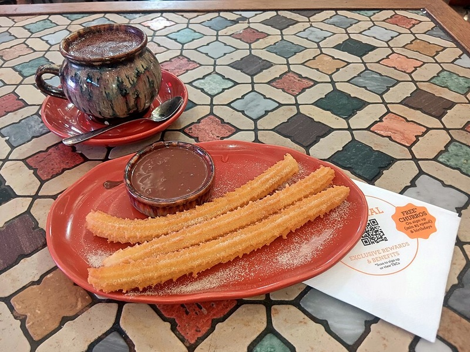
Chrupiące smażone ciasto, które często podaje się z gęstą, gorącą czekoladą.
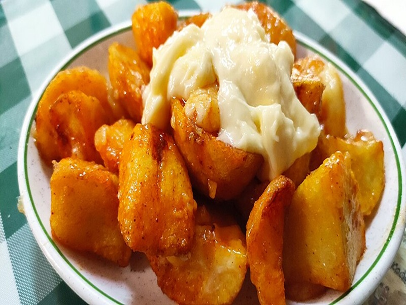
Smażone kawałki ziemniaków serwowane z pikantnym sosem pomidorowym, popularne w hiszpańskich barach tapas.
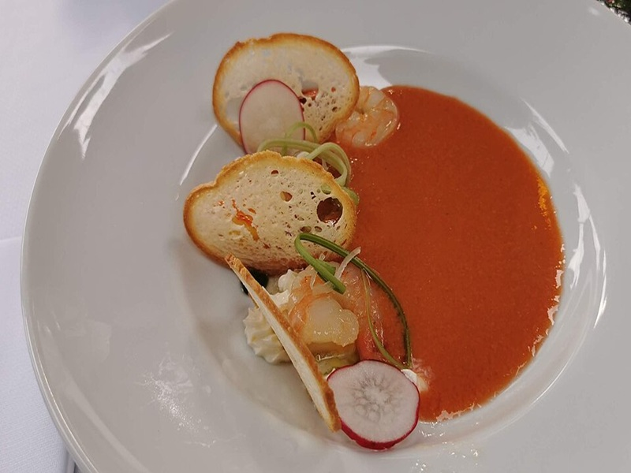
Orzeźwiający, podawany na zimno chłodnik z Andaluzji, przygotowywany głównie z pomidorów, ogórków, papryki, czosnku i oliwy z oliwek.
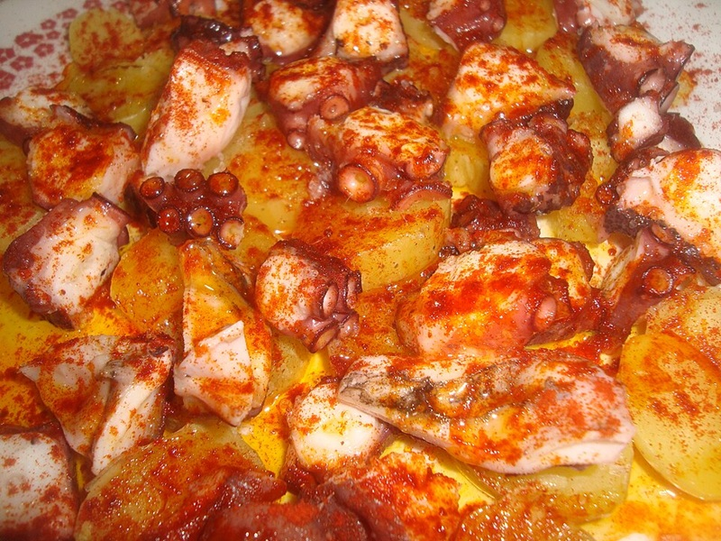
Tradycyjne danie z Galicji, przygotowywane z gotowanej ośmiornicy, ziemniaków, oliwy z oliwek oraz papryki.
Hiszpania to kraj pełen niezwykłych tradycji, różnorodnych krajobrazów i interesujących faktów.
Oprócz hiszpańskiego, w wybranych regionach używa się także języków takich jak kataloński, galicyjski i baskijski.
W sylwestra wiele osób w Hiszpanii zjada 12 winogron wraz z kolejnymi uderzeniami zegara o północy. Każde winogrono symbolizuje szczęście w jednym z nadchodzących miesięcy.
Flamenco jest silnie związane z Andaluzją. Łączy śpiew, taniec, rytmiczne klaskanie i grę na gitarze.
Do Hiszpanii należą między innymi Baleary na Morzu Śródziemnym oraz Wyspy Kanaryjskie na Oceanie Atlantyckim. Każdy z tych archipelagów ma inny krajobraz i klimat.
W miejscowości Buñol organizowany jest festiwal La Tomatina, podczas którego uczestnicy biorą udział w słynnej zabawie polegającej na obrzucaniu się pomidorami.
Sjesta to tradycyjna przerwa w ciągu dnia, kojarzona z odpoczynkiem po południu. Jej popularność jest jednak różna w zależności od regionu i stylu życia.